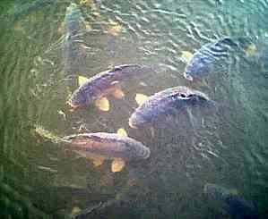

|  |  |
| Home | Recent | Species | Birds | Fish | Mammals | Insects | Fungi | Snaps | Wallpaper | Links | Contact |
Fish
CarpCarp are the most obvious fish, if only by their size. There are both Common and Mirror Carp at Chard, and the largest one caught was 36 pounds. These may be seen easily in the shallow waters around the bird hide where they regularly surprise visitors by their massive size. TenchThe elusive Tench grow to about 4 pounds.
|
 |
Bream
Small Bream are common at ChardRoach
A silver fish with reddish fins which is prolific at Chard.
Perch
A greenish fish growing to a size of about 1 pound and found around the submerged trees.
Eels
Eels up to 4 pounds inhabit the silt at the bottom of the reservoir.